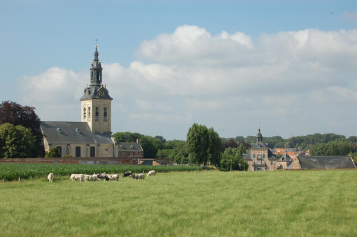

Welkom op de Website van de Vrienden van de Abdij van 't Park te Heverlee

Welkom op de Website van de Vrienden van de Abdij van 't Park
te Heverlee

U kan een
virtueel bezoek
brengen aan de Abdij van 't Park,
door de gebouwen en
meteen ook door de tijd heen
De Vrienden van de Abdij van 't Park heten u welkom op deze website.
U vindt informatie over de Vrienden
Contactpersonen: klik hier
Open Monumentendag
8 september 2013
Info: info@museumparkabdij.be, 016 40 01 51 (Ilse Heeren)
Programma
7u30 en 8u00: vroege vogelwandeling rond de vijvers, met gidsen
Vanaf 10u00: start vrije wandelingen op aangeduid parcours rond de abdij. Het Leuvens Historisch Genootschap zal aanwezig zijn om uitleg te verstrekken over de abdij in het landschap door de eeuwen heen, en dit voor de rest van de dag
11u00: rondleiding door gidsen van de Vrienden van de abdij van 'Park in de abdij en op het domein
Vanaf 13u30: vrije wandelingen op aangeduid parcours rond de abdij. Onderweg zullen landschapsposten staan waar uitleg wordt gegeven
Rondleidingen
door gidsen van de Vrienden van de abdij van 't Park in de abdij en op
het abdijdomein:
14u00, 16u00 en 17u00
Doorlopend
tot 17u00:
- Het museum in het Spreekhuis naast de kerk is tijdens de Open
Monumentendag gratis toegankelijk. Ook de tuinen zullen te
bezichtigen zijn.
- Verschillende stands over het gebied, de werking van Natuurpunt Oost-Brabant
en partnerorganisaties, drank en versnaperingen
Plaats van
afspraak:
Abdij van Park, Sint-Janspoort, Heverlee
Organisatie:
Natuurpunt Oost-Brabant en Natuurpunt Leuven in samenwerking met de Vrienden
van de Abdij van 't Park, het Leuvens Historisch Genootschap, de Vrienden
van Heverleebpos en Meerdaalwoud, de Bijenbond en Heemtuin van de abdij, de
Wereleldwinkel en de Stad Leuven.
BEREIKBAARHEID
Met de wagen:
Rijdende op de ring van Leuven komende van de E40, rechts aan
het einde van de expressweg, ligt de Geldenaaksebaan rechts aan de tweede
verkeerslichten (Parkpoort). U rijdt naar beneden onder de spoorbrug door.
Links ligt dan de abdijdreef.
U kan best proberen vooraan (aan de Geldenaaksebaan) te parkeren. Men kan ook
parkeren aan de Philipssite (Parkpoort) en dan te voet naar de abdij. Dit is tevens een mooie wandelroute, met een
prachtig zicht op de abdijsite.
Met het openbaar vervoer:
De ringbus heeft een halte aan de Parkpoort. Vandaar kan men naar de philipssite, waarachter men de abdij ziet liggen (ongeveer 15 minuten te voet).
De bussen op lijnen 4, 5, 6 en 630 (vanaan het station of het centrum van Leuven, richting Heverlee Kazerne, Haasrode / Neervelp / Brabanthal) hebben een halte op de Geldenaakse baan aan de Broekstraat. Iets verder links ligt de abdijdreef.
Diverse andere bussen van De Lijn rijden tot aan de Philipssite: U kan vandaar naar de abdij wandelen. Eerst loopt u van het complex Sportoase (zwembad) weg tussen de kantoorgebouwen, langsheen de rechthoekige vijver. 500 meter verder, aan het brugje van de spoorweg, ziet u de abdij mooi voor u liggen.
Museum Parkabdij
Adres: Museum Abdij van Park, 3001 Heverlee
Tel.: 016 40 01 51; Fax: 016 40 88 68,
mail
Bezoek:
1 april - 30 september:
- woensdag, donderdag, vrijdag en zondag: van 10 uur tot 12u30
en van 13u30 tot 17 uur
- zaterdag op aanvraag
- maandag en dinsdag gesloten
1 oktober - 31 maart:
- vrijdag en zondag: van 10 uur tot 12u30 en van 13u30 tot 17 uur
- zaterdag op aanvraag
- maandag tot donderdag gesloten
Op feestdagen: enkel na afspraak.
De leden van onze vereniging
krijgen korting op vertoon van hun lidkaart.
Meer informatie over het Museum Abdij van Park
Bezoekdagen abdij
Van november tot maart
gebeuren de
rondleidingen in de abdij op de eerste zondag
van de maand, om 16 uur.
Van april tot oktober wordt rondgeleid op elke zondag,
om 16 uur.
Vrijwilligers gevraagd
Onze vereniging wil graag het aantal vrijwilligers vergroten. U zou ons een bijzonder grote dienst bewijzen af en toe voor ons beschikbaar te zijn, bijvoorbeeld bij tentoonstellingen en speciale evenementen, mee te werken aan het onthaal … ook op weekdagen, al was het maar enkele keren een paar uurtjes.
Als u daar wat tijd vrij voor kunt maken, laat u ons dat weten?
Schrijven kunt u naar De Vrienden, Abdij van Park 7, 3001 Leuven Heverlee
Telefoneren kan naar het CRKC (016 40 60 73)
Wil u mailen, kunt u dat naar het email-adres
Wij danken u daar zeer hartelijk voor!
Lidmaatschap van de Vrienden van de Abdij van 't Park
De jaarlijkse bijdrage is nog steeds 15 euro - maar alle bijkomende steun is natuurlijk heel welkom. U kan uw 15 euro lidgeld overmaken op rekening 431-0052251-35 van de Vrienden van de Abdij van ’t Park. U krijgt dan regelmatig de nieuwsbrief, en u wordt uitgenodigd op de activiteiten van de Vrienden.
Informatie over rondleidingen,
projecten, steun of lidmaatschap,
cultureel erfgoed, werkgroep natuur, huwelijken, ...
Deze pagina werd bijgewerkt op 27/08/2013